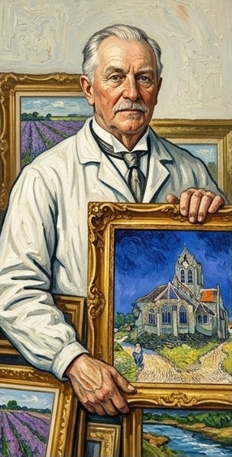
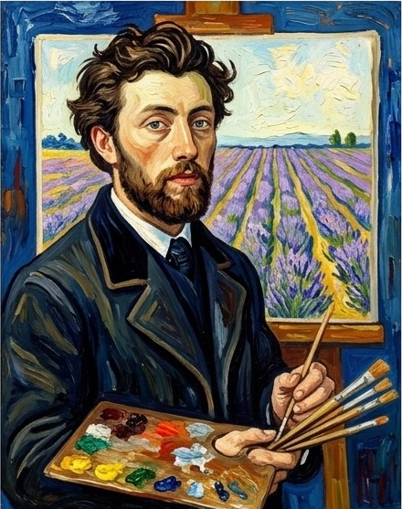
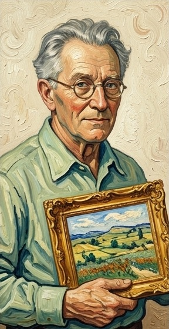
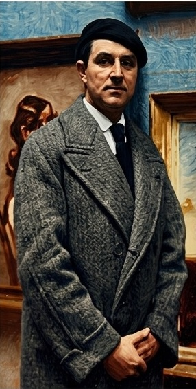
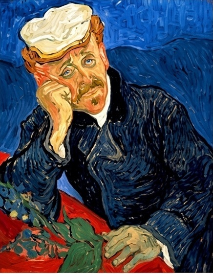

Galerie des Artistes
Collection privée — Sélection d’œuvres et biographies

René Charles Bellanger
1895–1964

Jean-Louis Appian
1862–1896

Jean-Michel Deny
Né en 1950

Louis Latapie
1891–1972

Roger Crusat
1917–1994
Sélectionnez un artiste pour consulter sa biographie et ses œuvres